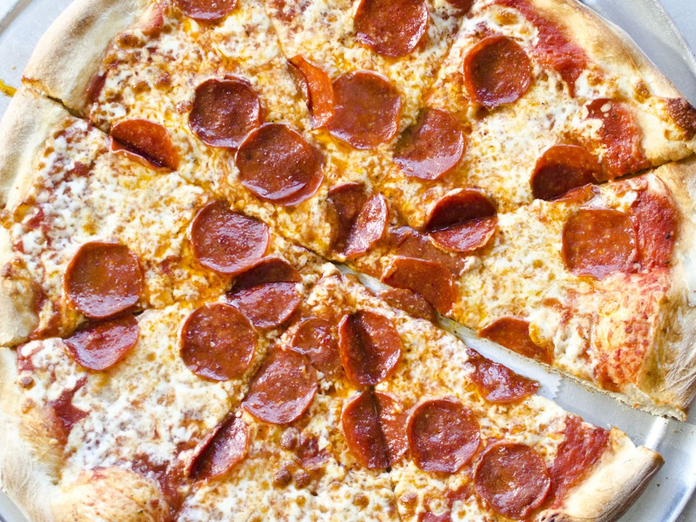

The Wonderful World of Food: Pizza
PAGES
A flattened disk of bread dough topped with various combinations of olive oil, oregano, tomato, olives, mozzarella
or other cheese, and other ingredients makes up pizza, an Italian dish that is quickly baked in a wood-fired oven that has been heated
to a very high temperature before being served hot.
The Margherita pizza, which is topped with tomatoes or tomato sauce, mozzarella, and basil,
is one of the most basic and well-known varieties.

INGREDIENTS:
| Ingredients |
Price |
| Pepperoni |
$3 |
| Sauce |
$5 |
| Mozzarella Cheese |
$3 |
| Oven Tray |
$16 |
| Sausage |
$8 |
| Tomatoes |
$2 |
RECIPE:
- Preheat oven to 450 degrees F (230 degrees C). Lightly grease a pizza pan.
- Place warm water in a bowl; add yeast and sugar. Mix and let stand until creamy, about 10 minutes.
- Add flour, oil, and salt to the yeast mixture; beat until smooth.
You can do this by hand or use a stand mixer fitted with a dough hook to make it easier. Let rest for 5 minutes.
- Turn dough out onto a lightly floured surface and pat or roll into a 12-inch circle. Transfer to the prepared pizza pan.
- Spread crust with sauce and toppings of your choice.
- Bake in the preheated oven until golden brown, 15 to 20 minutes. Remove from the oven and let cool for 5 minutes before serving.